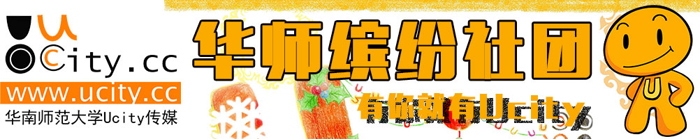

- 百团大战
- 校级社团
- Ucity简介
- Ucity2014年成就
1、吉他协会
华师吉他协会成立于1990年，至今已接受培养数百名吉爱好者。 吉他培训、摇滚节、圣诞晚会、多种主题联谊等各色活动，为学校 广大吉他爱好者提供良好的交流空间。协会以"服务广大吉他 爱好者"为宗旨，推广吉他文化在广州高校的普及提高，为营 造高校吉他音乐氛围而努力。
2、武术协会
"习武修身，传承文化！"在这里，我们一起训练，一起 进步，还可以一起参加功力大赛以及其他校内外的比赛。我们以 "武"会友！
3、记忆协会
记忆协会自07年成立至今，培训出近千名精英干事及会员。协会致 力打造杰出品牌活动：记忆锦标赛，小山坡英语集训营，大学城记 忆法巡回讲座，并拥有大学城最大晨读平台。
4、绿色文明社团
绿色文明社团成立于1999年。通过开展各项环保宣传、环境教育、 自然体验及实地调研活动，倡导和谐自然，绿色校园，培养我们的 环保意识 ，十一年来为中国环境领域输送数千名绿色人才。
5、新锐实践协会
新锐实践协会是隶属华南师范大学学生社团联合会的全校性学生组 织，以全心全意服务学生，提供社会实践机会为宗旨，"创新 实践。锐意进取"为口号，举办的实践星期六、企业文化
游， 模拟招聘会等特色品牌活动，是广大学生良好的实践平台。
6、旅游协会
华南师范大学旅游协会是致力于推广背包文化、团结广大旅游爱好 者的非营利性学生校级社团。我们会定期举办出游活动，提供优惠 路线；定期组织会员观看旅游电影。
7、少年儿童教育研究会
少年儿童教育研究会以大学生为本，以少年儿童为目标，一关爱少 年儿童、积极锻炼自我为宗旨，活动包括各项兴趣小组义教以及文 学社辅导，康复中心和残疾学校的服务活动等，为大学生们提供一 个积极锻炼自我的平台！
8、球迷协会
华师球迷协会，邀你一起"玩球，看球，侃球"。协会经 常组织学生观看足球和篮球赛事，体验精彩赛事；每年会组队参加大学城足球联赛，内部干事会一起打球，释放你的青春激情。
9、SIFE团队
SIFE是一个全球性非盈利组织，致力于制造未来经理人，组织学生 主导策划社会实践项目活动，帮助改善人们的生活质量，从而 "改变世界"。SIFE SCNU成立以来多次挺进全国赛并两 度夺取全国二等奖。
10、爱乐协会
爱乐协会以传播高雅音乐，提升同学音乐素养为目的，积极开展一 系列有意义的音乐活动，如开设各种乐器、乐理学习班、音乐知识 讲座，且每年举办精彩的音乐会及音乐赛事。
11、心理健康与个人发展协会
心协创会把"关注心理健康，激发个人潜能"作为工作宗 旨，九年连获优，七年取第一。本协会定期开展心理讲座，电影评 析、团体培训及心理健康活动月等精彩活动。你早已无需东张西望 ，这就是让你大显身手的平台！
12、读书社
读书社成立于1999年11月，自成立以来一直秉着"乐读书，读 乐书，读书乐"的宗旨举办众多活动。品牌活动包括读书交流 会；炭精画大型展览及讲座，与校图书馆合作的世界读书节系列活 动等。在这儿，我们"与书香为伴，与智慧同行"。
13、公关协会
华师公关协会结合了学术性和实践性，是一个优质的公关实践平台 。公协因培养我们的开创性思维、拓展经营人脉、提高语言沟通能 力而生，为丰富我们的课余生活，创造"家"的氛围而存 ，而公协人策划的公关策划大赛和大型舞会等更发展成为我们的品 牌活动！公协力量，超出你的想象！
14、文学院演讲与沟通协会
文学院演讲与沟通协会秉承提高学生"读、写、讲、演" 能力为学生提供锻炼机会和平台为宗旨，举办普通话模拟测试、普 通话考前培训、全员系列培训、各种演讲朗诵大赛等品牌活动，同 时也注重联络社会的企业单位和学校单位，为学院学生开展更广阔 的展示空间。
15、电子竞技协会
烽火点燃，新一场战争即将来临。每一个饱经腥风血雨的队伍，如 今都需要新的血液的倾注。我们，在战场的最前线，呼唤你们。魔 兽，实况，拳皇……每一个开辟抑或未开的战场，都在 等待你们去闯荡，去开拓。
16、创业协会
创业协会是一个实行公司化运营、团队化培训和管理的学生社团组 织。创协为有志于创业的大学生提供一个良好平台去实现自己的梦 想，营造勇于开创创新的校园文化氛围。品牌活动有创业策划大赛+ 立项实操、知识竞赛、创业研讨交流会。
17、化环学院中学化学教学研究会
化环学院中学化学研究协会成立于1988年，多面向会员开展融实践 性、学术性、趣味性于一体的活动，如师范技能讲座，模拟课堂大 赛，重温高考等。在这些活动中，同学们可以一展自己所长，也可 以认识和完善自己所段，得到一个自我提升的机会。
18、自行车协会
爱骑行，爱生活，更爱彼此。六年来，我们一起携手为爱远征，骑 行万里。我们快乐，所以年轻；我们自信，所以坚持；我们豪迈， 所以勇往直前。彼此间的不离不弃，酿就你我的情谊，我们是华南 师大自行车协会，从这里开始，不一样的精彩，由你演绎。
19、化环学院口才协会
化学与环境学院口才协会自1986年成立以来，以"提高会员的 普通话水平，培养同学们的各种口才技巧，锻炼同学们站在众人面 前表演比赛的胆量，提高同学们自身的交际能力"为宗旨。主 要有新生杯辩论赛、影视配音大赛如班徽主持大赛三个品牌活动。
20、化环学院科普协会
科学知识普及协会，简称科普协会，是化环学院四大协会之一，已 有多年历史。协会旨在普及科学知识，拓展大众视野。协会的品牌 活动有科学知识竞赛，三下乡，等等。在会员福利方面，协会每月 为会员提供会刊和科学杂志，并积极邀请会员参与活动。
21、影像协会
我们捕捉美丽的瞬间，珍藏永恒的眷恋。我们开展动态拍摄，原创 校园风光类短片、制作MTV、DV，还有记录性文化短片、电影摄制 等；我们开展静态摄影，制作校园生活摄影集，开展户外写生，还 有宣传海报的制作，PS技术交流等。
22、书画协会
书生意气，画点江山，协同共进，会聚之音——书画 协会真诚欢迎大家的加入。在这里，我们有最绚丽的活动，迎新书 画大赛，春节送新联，书画大讲坛；在这里，我们有最专业的培训 课，每周相约；在这里，我们有最认真的指导老师；在这里，我们 有最辛勤讲师团队伍……
23、岭南文化青年协会
岭南文化青年协会，由热心于保护和传承民间传统文化的学生青年 构建，成立于2007年10月23日。社团以立足于校园内外，为繁荣校 园文化和建设和谐社会主义文化贡献力量为宗旨。社团有广州古迹 游览，粤语培训，清明祭扫，传承艺术讲座等特色活动。
24、经济与管理协会
我经管协会的愿景是打造华师最大、最强、最专业的学术性社团， 培养与成就未来精英。我们坚信以学术为核心，致力于提供成长的 平台，培育华师未来精英。
25、化环学院社团联合会
化环社联自成立以来，本着"繁荣社团文化，展现社团魅力 "的宗旨，以切实搞好社团工作为目标，全力为华师学生搭建 一个展示个人才华和魅力的舞台。本学年除了精彩的"足球赛 "外，还有拓展交际的"交友连连看"和热闹非凡 的"跳蚤市场"。
26、台球协会
技术卓越却苦于没有一个一展身手的平台？遇到瓶颈却苦于没有高 手指导？想要尝试却苦于没有机会？台球协会将一次过帮你解决所 有难题！你准备好了吗？华南师范大学台球协会创办于2011年，面 向全校师生。"携手台球好手、立足校园、携手发展、独立对 抗、共同担当"是我们的承诺。
27、文学院骐骥社
华南师范大学骐骥社是在文学院党委黄楚文副书记和学工办黄彩霞 老师的指导下成立的，秉承"自立改变现在，自强铸造未来 "的理念，旨在为家境贫困的学生提供思想熏陶和提升自我的 平台。骐骥社主打品牌活动有师范技能和兼职技能培训等。
28、澳门学生组织荷花社
荷花社致力加强各院、系澳门生和国内外学生之间的联系，促进学 术研究和文化交流。并透过本社促进两岸三地的学生研究和文化交 流，从而进一步加强澳门学生与各地学生之间的联系，并为华师与 特区之间建立一条学术交流与情感沟通的桥梁。
29、乒乓球协会
"横竖任你拍击，精彩由你演绎"，不仅是我们的口号， 也是我们的承诺。我们会为广大乒乓球爱好者提供一个训练的基地 、交流的平台、竞技的舞台。我们的品牌活动新生杯，全校性比赛 ，广州大学生联赛将带给你真正的视觉上的冲击，全新的定位体验 。
30、国防教育协会
国防教育协会，坚持打造华师军事爱好者的天堂。主要活动有出版 杂志、军事角、WAR GAME等，还组织参观连长学校 ——军体校。有理论部、宣策策划部和外联部。
31、行政研究协会
这里是行政研究协会。我们热爱自由讨论国家的大事小事，关注百 姓民生；我们直面各种有违公平正义的现象，探索社会问题的出路 ；我们还与外校通知者交流和分享思想成果。我
们的品牌活动有： 项目分析、三校交流会、三下乡公益活动等。
32、定向越野俱乐部
定向越野俱乐部，在注意提高干事能力的同时不忘提升身体素质。 各兄弟高校间的比赛，让你有机会跑遍其他高校，结识同道中人。
33、新长城华南师范大学自强社
新长城华南师范大学自强社是由中国扶贫基金会新长城项目办公室 倡导成立，并由华南师范大学学生工作部、校团委共同指导和支持 ，以贫困大学生为主体，以"传递社会关爱，铸造自强之才 "为宗旨的校级学生社团。
34、跆拳道协会
跆拳道协会成立于2004年12月，秉承跆拳道礼仪、廉耻、忍耐、克 己、百折不屈的精神，按照会员水平，因人施教，并不定期与外校 交流，旨在让大家了解并学习跆拳道。跆拳道是一项时尚运动，学 习它，男同学可以强身健体，女同学可以防身健美。
35、网络协会
网络协会（ISCNU）由学生网管及对网络感兴趣的同学组成，受校团委。学生部、宣传部、网络中心统一指导。JSCNU旗下网站包括 ：资源门户（I.SCNU.CN）新陶园论坛（BBS.SCNU.SDU.CN）、陶园PT站、华师微博、百科、家园等。我们的口号是给同学们收获 。
36、海碰子文学社
华南师范大学海碰子文学社是正式在校团委注册的唯一的文学社。 海碰子意为"弄潮儿"，成立于1984年，其作品遍发全 国各大报刊杂志。海碰子一直致力于校园文学的发展，注重与外界 保持良好联系，定期举办丰富多彩的文学性活动。曾多次获得华师 校团委颁发的"优秀社团"称号。
37、陶行知研究协会
陶研在华师有着悠久的历史，我们一直以宣扬陶行知先生的教育理 念为宗旨，秉承"示范性、学术性、活动性"三基点，以 师范生为主要对象，开展一系列师陶、学陶活动，如行知学堂、课 堂模拟挑战赛。
38、阳光义教队
每年盛夏，总有一群人，走遍千山万水，把阳光撒到渴望阳光的角 落。阳光义教队，致力于带给农村孩子一抹阳光。作为一支公益性 支教队伍，我们还很幼稚，但也始终坚信，有我们的地方，就有阳 光……
39、棋艺苑
华师棋艺苑成立于2006年3月，是华师棋迷温暖的家。棋艺苑秉着 "以棋会友，弘扬棋艺文化"的宗旨，举办棋类活动，如 棋迷杯，棋艺交流会，给广大棋迷提供一个自由挥洒的平台。同时 ，棋艺苑每年都会派出代表参加十月份的高校联赛，大学城八校联 赛等棋类竞赛，提高华师整体棋力。
40、学生职业生涯发展协会
学生职业生涯发展协会自04年成立，始终以"启蒙职业规划意 识，促进职业生涯发展"为宗旨，倡导"职业早规划、事 业快发展"思想，创立"职场精英赛"与"行 业分析大赛"等品牌活动，致力于大学生职业生涯规划问题研 究，帮助学生了解社会对人才的需求和为提高就业竞争力提供服务 。
41、物电师范能力培养协会
本着培养同学们的实践、创新能力，提高同学们的师范技能，繁荣 校园文化宗旨，我们举办了辩论赛，教具设计制作大赛，讲演比赛 ，视频观摩以及各类学术讲座，为同学们提供一
个锻炼、提升自我 的平台。
42、校口才协会
华南师范大学口才协会秉承"卓越口才，真情沟通"的宗 旨，开展各种特色活动，如"凤鸾初鸣，我说我行"新生 演讲比赛、"辩论风云"辩论比赛系列活动、"起 航杯"演讲与朗诵比赛，以及各类常规活动，如主场、辩论、 演讲、商务谈判培训与比赛、普通话培训。
43、物理与电信工程学院无限电协会
无线电协会，以"服务大众，普及电子科学"为宗旨，努 力为同学创造丰富而又充实的课余生活，激发同学的潜在实力，提 高同学的电子设计制作等水平。为省物，省电、国电挖掘与培养更 多技术人才。主要品牌活动有"义务维修"、"电 子组装设计大赛"。
44、计算机协会
计算机协会是以服务同学及提高日常计算机应用水平为宗旨的校级 社团，日常活动主要有上门义修、计算机考试培训、PS等工作常用 软件培训、试玩评测市场最新硬件（稿酬100左右）、超频等，且有 前辈一对一解答你有关电脑的问题。
45、毽球协会
以"毽"会友，快乐"毽"身！毽球协会的成 立旨在为广大毽球爱好者提供一个交流、提高毽球技术的平台。这 里有激情四射的网毽比赛，快乐无限的网毽时光。
46、轮滑协会
轮滑协会从不乏激情与快乐！我们组织参加全国性滑轮赛事 FREESTYLE轮滑盛典；我们全力举办一年一度的轮滑节；我们还有 每周两次兼顾技术训练与刷街的常规活动以及每学年都安排的溜真 冰和露营活动……
47、白樱动漫社
华南师范大学白樱动漫协会，一个集原创、赏析、COSPALY、模型 等充满动漫元素的社团，校内曾举办多种活动（如学园祭、原创大 赛等），校外受邀请参加各高校动漫节，同时COSER还加团参加广 州等地举办的漫展。
48、小天使英语俱乐部
华师LITTLE ANGEL小天使英语俱乐部前身华南师范大学外语学院协 会，后跻身校级社团，连续多年获优秀社团称号。LITTLE ANGEL以 鼓励同学们学习英语为己任，以LEARN TOGETHER ,ENJOY TOGETHER 为宗旨，提高同学们英语应用能力。特色品牌活动有英 语角和电影节，还有圣诞晚会等精彩演出。
49、羽毛球协会
华师羽协由华师羽毛球爱好者组成，羽协通过对内的培训与活动， 对外的高校联谊，各种羽毛球赛的策划举行或参与，成就了我们的 社团特色——既有轻松活跃的打球气氛，又有严谨认 证的工作气氛。
50、集邮协会
我们的目标是："邮"你更精彩！我们的宗旨是：带你 "邮"遍古今中外！华师集邮协会历史悠久，于1983年 成立，而且与时俱进，著名邮票的发行都有留底。集邮协会，胜在 有很多锻炼的机会，过去的一年，举办过邮票展览、大学城兄弟学 校邮票讲座，集邮知识竞赛，双亲节邮寄明信片等盛大的活动 。

Ucity简介
Ucity校园传媒是华南师范大学学生工作处指导下的实践、创新、培训基地。Ucity校园传媒致力于为广大学子提供各类校园资讯、计算机维修服务及大型校园活动策划实施等······